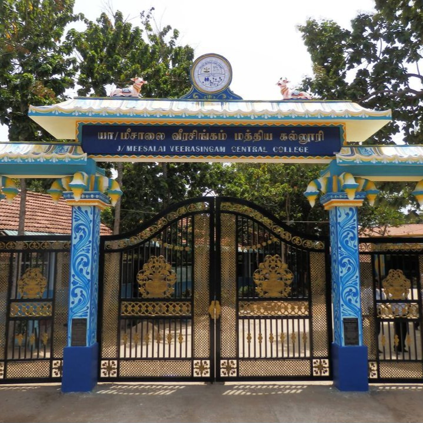
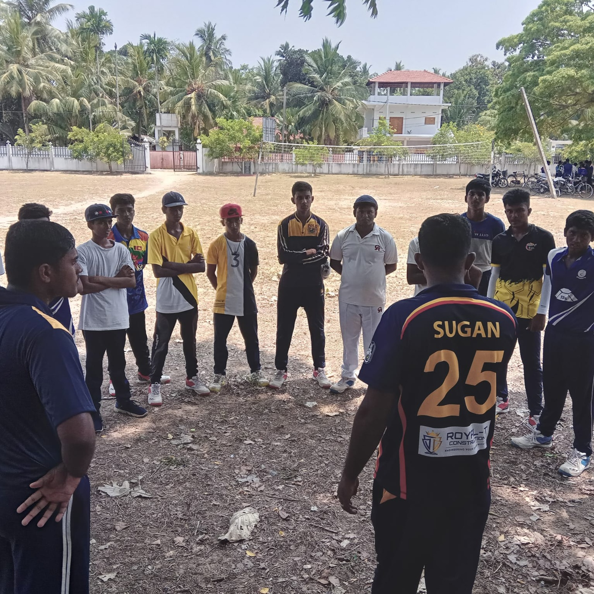
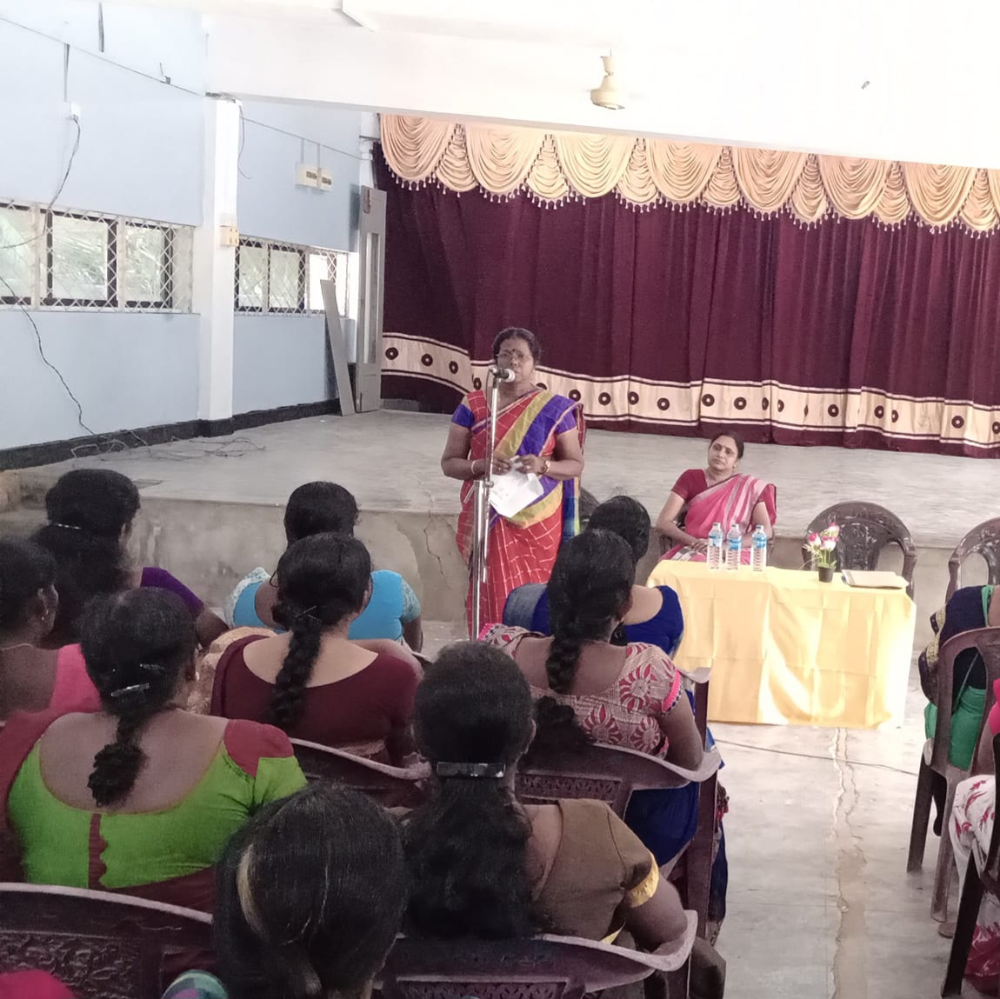

Our Featured Collection

நுழைவாயில் 🏢

விளையாட்டு ⛹️♀️

சந்திப்பு 🗣
அமரர். வேதாரணியர் வீரசிங்கம் என்பவர் மீசாலை பிரதேசத்தில் சைவத்தையும் தமிழையும் வளர்க்கும் நோக்குடன் சொந்த வீட்டில் ஆரம்பிக்கப்பட்ட இப் பாடசாலை மாணவர் தொகை படிப்படியாக அதிகரிக்க இடநெருக்கடி ஏற்பட்டமையால் கண்டி வீதியின் தற்போது பாடசாலை அமைந்துள்ள இடத்தில் விசாலமான கொட்டில்களை அமைத்து பாடசாலையினை தொடர்ந்து நடாத்தி அப் பாடசாலையினை நிர்வகிக்க ஒரு பரிபாலன சபை (அறங்காவலர் சபை) நிறவினார். 1919 அளவில் வீரசிங்கனார் இயற்கை எய்தினார். அவர் இயற்கை எய்தியதும் பாடசாலை நிர்வாக விடயமனைத்தும் அறங்காவலர் சபையினரே கவனித்து வந்தார்கள். இவர்களது முயற்சியால் 1926 ஆம் ஆண்டு ஆவணி மாதம் வீரசிங்கம் சைவ வித்தியாசாலை என்ற பெயருடன் முறையாக ஒரு பாடசாலையாக அமைக்கப்பட்டது.
நுழைவாயில் 🏢
விளையாட்டு ⛹️♀️
சந்திப்பு 🗣